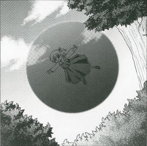
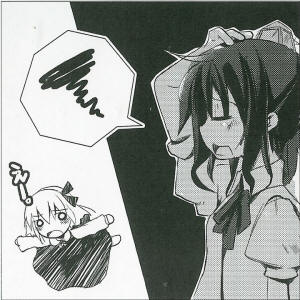

>Demon Lurks in Darkness, in Broad Daylight
Adverse effects on summer plants, says expertLately, a small darkness has been appearing during the afternoons of midsummer.
Light doesn't pass through this darkness, it just stains it black and continues on its way through Gensokyo's fields.
This small lump of darkness only prevents light from reaching it, it does not have any physical effect on anything that touches it.
The true identity of this darkness is the youkai of darkness, Rumia (youkai).
She abolishes the light around her, which prevents revealing her form and seeing outside from the darkness.
I questioned Rumia herself as to why she was doing this.
Because the sunlight is all hot in the summer and I don't like it. By avoiding sunlight like this, I can get past the heat too. If I'm surrounded by darkness, it's always summer night. Summer nights feel really good, you know?
Regarding what effect it can have to be surrounded in darkness all day, I decided to ask an expert familiar with the details of living while avoiding sunlight.
Aah. There's no way it can have a positive effect on the plants that are in the darkness together as well. Even if it's only a single day, there will be an effect. The youkai inside? Well yes, there's no effect on the youkai. On the contrary, there are more youkai that are weak to sunlight. If they can get by without being exposed to sunlight, then they'd do so. Reading books indoors is the absolute best for a bright and clear day like today. (Owner of Kourindou)
To prevent any negative effects on plants, I cautioned the youkai of darkness that it might be better to not stay in one place.
Rumia does not appear to have a reason for creating darkness, other than avoiding heat.
For those weak against sunlight, if you see darkness moving across the plains, it may be a good idea to take a break inside.
 Rumia
What's this piece of paper?
Aya
An objective article on you.
Rumia
You know, lately there's been a lot of weird youkai coming into my summer resort paradise. That's never happened before, though.
Aya
If you kept floating around like that, you might've been regarded as something dangerous and consequently attacked, so I wrote an article on it.
Rumia
Buut. If more things come into the darkness it gets hotter, doesn't it?
Aya
Then inviting an ice fairy in might make it cooler.
Rumia
Seems cold...
Aya
By the way, it's too dark and I can't see very well. Could you make it a bit brighter?
Rumia
What're you saying, I've already let a little light in so I could read this piece of paper.
Aya
It's too dark around me and I can't read my notebook. I can't take notes either.
Rumia
Aah, geez, if I let even a little light in it gets really bright.
Aya
But to think I really can't see anything outside at all. It's a bit difficult to tell where we're flying.
Rumia
Of course you can't. We can't see after all.
Aya
Eh?
Rumia
I bump into trees all the time, but that just goes to show what darkness is all about.
Aya
Are you just floating about without any specific destination in mind?
Rumia
Obviously. It's too dark to see, so it's the same no matter where I go.
Aya
It's because of you that it's too dark to see.
Rumia
Ooh, is that so~?
Aya
That is so~. By the way, why do you hate sunlight so much?
Rumia
You don't hate it?
Aya
I enjoy both afternoon when humans are active, and night when youkai are active. I have no troubles with articles.
Rumia
That's rare. When I'm out in the sunlight, my skin gets all rough and I can't think, and my hair gets all messy and I get split ends, and in the end I get really sleepy.
Aya
I think that's because you're lacking something.
Rumia
But I'm fine in moonlight. I don't need to make any darkness at night and it's bright.
Aya
You seem to fly around aimlessly in the afternoon, but what do you do at night?
Rumia
Nothing much. I just fly around at night too.
Aya
So a lifestyle without any real goal in mind. Lately, it feels like there are more youkai who don't feel like learning or working. It's quite depressing.
Rumia
Attacking humans is a youkai's job.
Aya
But are you exerting any effort in attacking humans?
Rumia
Lately, humans won't let me attack them. This other time I was beaten up instead.
Aya
It's because of that that you can't uphold your dignity as a youkai. At the very least, you should meld into the darkness at night and position yourself at a road.
Rumia
Eeeh, what a pain.
Profile:
Rumia
A youkai has ability to manipulate the darkness.
It's always dark around her.
Appearances:
Embodiment of Scarlet Devil